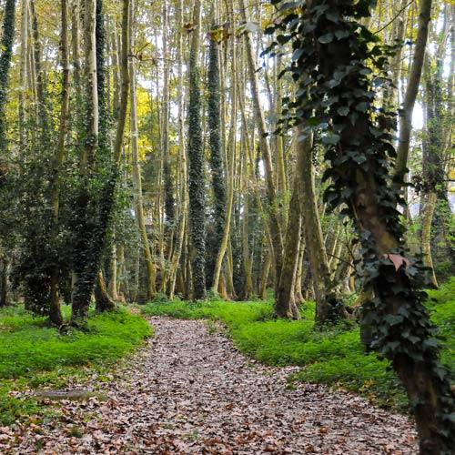

Visita · Gualba
Al costat mateix del nucli, el Parc de la Riera és un tram de la riera de Gualba on els meandres arriben a formar una petita illa. Connecta amb el passeig de la Riera, que segueix el curs d'aigua,…